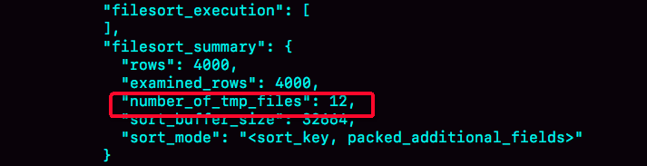
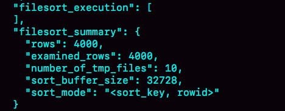
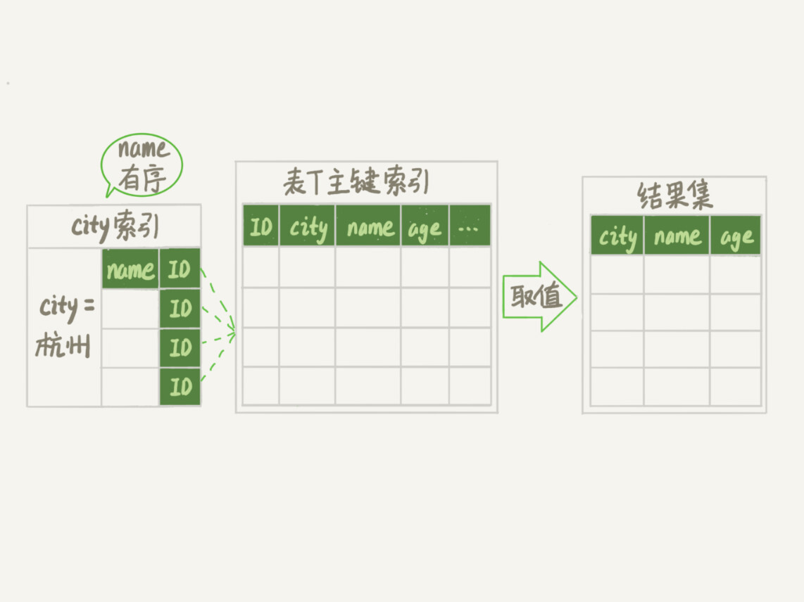
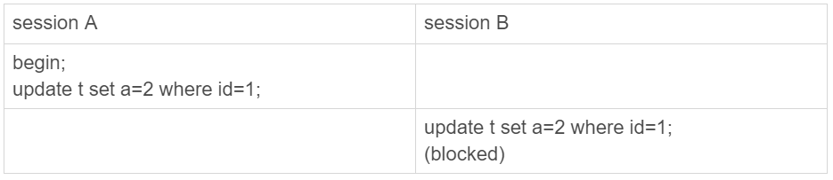

- 00 开篇词 这一次，让我们一起来搞懂MySQL.md.html
- 01 基础架构：一条SQL查询语句是如何执行的？.md.html
- 02 日志系统：一条SQL更新语句是如何执行的？.md.html
- 03 事务隔离：为什么你改了我还看不见？.md.html
- 04 深入浅出索引（上）.md.html
- 05 深入浅出索引（下）.md.html
- 06 全局锁和表锁 ：给表加个字段怎么有这么多阻碍？.md.html
- 07 行锁功过：怎么减少行锁对性能的影响？.md.html
- 08 事务到底是隔离的还是不隔离的？.md.html
- 09 普通索引和唯一索引，应该怎么选择？.md.html
- 10 MySQL为什么有时候会选错索引？.md.html
- 11 怎么给字符串字段加索引？.md.html
- 12 为什么我的MySQL会“抖”一下？.md.html
- 13 为什么表数据删掉一半，表文件大小不变？.md.html
- 14 count()这么慢，我该怎么办？.md.html
- 15 答疑文章（一）：日志和索引相关问题.md.html
- 16 “order by”是怎么工作的？.md.html
- 17 如何正确地显示随机消息？.md.html
- 18 为什么这些SQL语句逻辑相同，性能却差异巨大？.md.html
- 19 为什么我只查一行的语句，也执行这么慢？.md.html
- 20 幻读是什么，幻读有什么问题？.md.html
- 21 为什么我只改一行的语句，锁这么多？.md.html
- 22 MySQL有哪些“饮鸩止渴”提高性能的方法？.md.html
- 23 MySQL是怎么保证数据不丢的？.md.html
- 24 MySQL是怎么保证主备一致的？.md.html
- 25 MySQL是怎么保证高可用的？.md.html
- 26 备库为什么会延迟好几个小时？.md.html
- 27 主库出问题了，从库怎么办？.md.html
- 28 读写分离有哪些坑？.md.html
- 29 如何判断一个数据库是不是出问题了？.md.html
- 30 答疑文章（二）：用动态的观点看加锁.md.html
- 31 误删数据后除了跑路，还能怎么办？.md.html
- 32 为什么还有kill不掉的语句？.md.html
- 33 我查这么多数据，会不会把数据库内存打爆？.md.html
- 34 到底可不可以使用join？.md.html
- 35 join语句怎么优化？.md.html
- 36 为什么临时表可以重名？.md.html
- 37 什么时候会使用内部临时表？.md.html
- 38 都说InnoDB好，那还要不要使用Memory引擎？.md.html
- 39 自增主键为什么不是连续的？.md.html
- 40 insert语句的锁为什么这么多？.md.html
- 41 怎么最快地复制一张表？.md.html
- 42 grant之后要跟着flush privileges吗？.md.html
- 43 要不要使用分区表？.md.html
- 44 答疑文章（三）：说一说这些好问题.md.html
- 45 自增id用完怎么办？.md.html
- 我的MySQL心路历程.md.html
- 结束语 点线网面，一起构建MySQL知识网络.md.html
- 捐赠
16 “order by”是怎么工作的？
在你开发应用的时候，一定会经常碰到需要根据指定的字段排序来显示结果的需求。还是以我们前面举例用过的市民表为例，假设你要查询城市是“杭州”的所有人名字，并且按照姓名排序返回前 1000 个人的姓名、年龄。
假设这个表的部分定义是这样的：
CREATE TABLE `t` (
`id` int(11) NOT NULL,
`city` varchar(16) NOT NULL,
`name` varchar(16) NOT NULL,
`age` int(11) NOT NULL,
`addr` varchar(128) DEFAULT NULL,
PRIMARY KEY (`id`),
KEY `city` (`city`)
) ENGINE=InnoDB;
这时，你的 SQL 语句可以这么写：
select city,name,age from t where city='杭州' order by name limit 1000 ;
这个语句看上去逻辑很清晰，但是你了解它的执行流程吗？今天，我就和你聊聊这个语句是怎么执行的，以及有什么参数会影响执行的行为。
全字段排序
前面我们介绍过索引，所以你现在就很清楚了，为避免全表扫描，我们需要在 city 字段加上索引。
在 city 字段上创建索引之后，我们用 explain 命令来看看这个语句的执行情况。

图 1 使用 explain 命令查看语句的执行情况
Extra 这个字段中的“Using filesort”表示的就是需要排序，MySQL 会给每个线程分配一块内存用于排序，称为 sort_buffer。
为了说明这个 SQL 查询语句的执行过程，我们先来看一下 city 这个索引的示意图。

图 2 city 字段的索引示意图
从图中可以看到，满足 city=‘杭州’条件的行，是从 IDX 到 ID(X+N) 的这些记录。
通常情况下，这个语句执行流程如下所示 ：
- 初始化 sort_buffer，确定放入 name、city、age 这三个字段；
- 从索引 city 找到第一个满足 city=‘杭州’条件的主键 id，也就是图中的 ID_X；
- 到主键 id 索引取出整行，取 name、city、age 三个字段的值，存入 sort_buffer 中；
- 从索引 city 取下一个记录的主键 id；
- 重复步骤 3、4 直到 city 的值不满足查询条件为止，对应的主键 id 也就是图中的 ID_Y；
- 对 sort_buffer 中的数据按照字段 name 做快速排序；
- 按照排序结果取前 1000 行返回给客户端。
我们暂且把这个排序过程，称为全字段排序，执行流程的示意图如下所示，下一篇文章中我们还会用到这个排序。

图 3 全字段排序
图中“按 name 排序”这个动作，可能在内存中完成，也可能需要使用外部排序，这取决于排序所需的内存和参数 sort_buffer_size。
sort_buffer_size，就是 MySQL 为排序开辟的内存（sort_buffer）的大小。如果要排序的数据量小于 sort_buffer_size，排序就在内存中完成。但如果排序数据量太大，内存放不下，则不得不利用磁盘临时文件辅助排序。
你可以用下面介绍的方法，来确定一个排序语句是否使用了临时文件。
/* 打开 optimizer_trace，只对本线程有效 */
SET optimizer_trace='enabled=on';
/* @a 保存 Innodb_rows_read 的初始值 */
select VARIABLE_VALUE into @a from performance_schema.session_status where variable_name = 'Innodb_rows_read';
/* 执行语句 */
select city, name,age from t where city='杭州' order by name limit 1000;
/* 查看 OPTIMIZER_TRACE 输出 */
SELECT * FROM `information_schema`.`OPTIMIZER_TRACE`\G
/* @b 保存 Innodb_rows_read 的当前值 */
select VARIABLE_VALUE into @b from performance_schema.session_status where variable_name = 'Innodb_rows_read';
/* 计算 Innodb_rows_read 差值 */
select @b-@a;
这个方法是通过查看 OPTIMIZER_TRACE 的结果来确认的，你可以从 number_of_tmp_files 中看到是否使用了临时文件。

图 4 全排序的 OPTIMIZER_TRACE 部分结果
number_of_tmp_files 表示的是，排序过程中使用的临时文件数。你一定奇怪，为什么需要 12 个文件？内存放不下时，就需要使用外部排序，外部排序一般使用归并排序算法。可以这么简单理解，MySQL 将需要排序的数据分成 12 份，每一份单独排序后存在这些临时文件中。然后把这 12 个有序文件再合并成一个有序的大文件。
如果 sort_buffer_size 超过了需要排序的数据量的大小，number_of_tmp_files 就是 0，表示排序可以直接在内存中完成。
否则就需要放在临时文件中排序。sort_buffer_size 越小，需要分成的份数越多，number_of_tmp_files 的值就越大。
接下来，我再和你解释一下图 4 中其他两个值的意思。
我们的示例表中有 4000 条满足 city=‘杭州’的记录，所以你可以看到 examined_rows=4000，表示参与排序的行数是 4000 行。
sort_mode 里面的 packed_additional_fields 的意思是，排序过程对字符串做了“紧凑”处理。即使 name 字段的定义是 varchar(16)，在排序过程中还是要按照实际长度来分配空间的。
同时，最后一个查询语句 select @b-@a 的返回结果是 4000，表示整个执行过程只扫描了 4000 行。
这里需要注意的是，为了避免对结论造成干扰，我把 internal_tmp_disk_storage_engine 设置成 MyISAM。否则，select @b-@a 的结果会显示为 4001。
这是因为查询 OPTIMIZER_TRACE 这个表时，需要用到临时表，而 internal_tmp_disk_storage_engine 的默认值是 InnoDB。如果使用的是 InnoDB 引擎的话，把数据从临时表取出来的时候，会让 Innodb_rows_read 的值加 1。
rowid 排序
在上面这个算法过程里面，只对原表的数据读了一遍，剩下的操作都是在 sort_buffer 和临时文件中执行的。但这个算法有一个问题，就是如果查询要返回的字段很多的话，那么 sort_buffer 里面要放的字段数太多，这样内存里能够同时放下的行数很少，要分成很多个临时文件，排序的性能会很差。
所以如果单行很大，这个方法效率不够好。
那么，如果 MySQL 认为排序的单行长度太大会怎么做呢？
接下来，我来修改一个参数，让 MySQL 采用另外一种算法。
SET max_length_for_sort_data = 16;
max_length_for_sort_data，是 MySQL 中专门控制用于排序的行数据的长度的一个参数。它的意思是，如果单行的长度超过这个值，MySQL 就认为单行太大，要换一个算法。
city、name、age 这三个字段的定义总长度是 36，我把 max_length_for_sort_data 设置为 16，我们再来看看计算过程有什么改变。
新的算法放入 sort_buffer 的字段，只有要排序的列（即 name 字段）和主键 id。
但这时，排序的结果就因为少了 city 和 age 字段的值，不能直接返回了，整个执行流程就变成如下所示的样子：
- 初始化 sort_buffer，确定放入两个字段，即 name 和 id；
- 从索引 city 找到第一个满足 city=‘杭州’条件的主键 id，也就是图中的 ID_X；
- 到主键 id 索引取出整行，取 name、id 这两个字段，存入 sort_buffer 中；
- 从索引 city 取下一个记录的主键 id；
- 重复步骤 3、4 直到不满足 city=‘杭州’条件为止，也就是图中的 ID_Y；
- 对 sort_buffer 中的数据按照字段 name 进行排序；
- 遍历排序结果，取前 1000 行，并按照 id 的值回到原表中取出 city、name 和 age 三个字段返回给客户端。
这个执行流程的示意图如下，我把它称为 rowid 排序。

图 5 rowid 排序
对比图 3 的全字段排序流程图你会发现，rowid 排序多访问了一次表 t 的主键索引，就是步骤 7。
需要说明的是，最后的“结果集”是一个逻辑概念，实际上 MySQL 服务端从排序后的 sort_buffer 中依次取出 id，然后到原表查到 city、name 和 age 这三个字段的结果，不需要在服务端再耗费内存存储结果，是直接返回给客户端的。
根据这个说明过程和图示，你可以想一下，这个时候执行 select @b-@a，结果会是多少呢？
现在，我们就来看看结果有什么不同。
首先，图中的 examined_rows 的值还是 4000，表示用于排序的数据是 4000 行。但是 select @b-@a 这个语句的值变成 5000 了。
因为这时候除了排序过程外，在排序完成后，还要根据 id 去原表取值。由于语句是 limit 1000，因此会多读 1000 行。

图 6 rowid 排序的 OPTIMIZER_TRACE 部分输出
从 OPTIMIZER_TRACE 的结果中，你还能看到另外两个信息也变了。
- sort_mode 变成了
- number_of_tmp_files 变成 10 了，是因为这时候参与排序的行数虽然仍然是 4000 行，但是每一行都变小了，因此需要排序的总数据量就变小了，需要的临时文件也相应地变少了。
全字段排序 VS rowid 排序
我们来分析一下，从这两个执行流程里，还能得出什么结论。
如果 MySQL 实在是担心排序内存太小，会影响排序效率，才会采用 rowid 排序算法，这样排序过程中一次可以排序更多行，但是需要再回到原表去取数据。
如果 MySQL 认为内存足够大，会优先选择全字段排序，把需要的字段都放到 sort_buffer 中，这样排序后就会直接从内存里面返回查询结果了，不用再回到原表去取数据。
这也就体现了 MySQL 的一个设计思想：如果内存够，就要多利用内存，尽量减少磁盘访问。
对于 InnoDB 表来说，rowid 排序会要求回表多造成磁盘读，因此不会被优先选择。
这个结论看上去有点废话的感觉，但是你要记住它，下一篇文章我们就会用到。
看到这里，你就了解了，MySQL 做排序是一个成本比较高的操作。那么你会问，是不是所有的 order by 都需要排序操作呢？如果不排序就能得到正确的结果，那对系统的消耗会小很多，语句的执行时间也会变得更短。
其实，并不是所有的 order by 语句，都需要排序操作的。从上面分析的执行过程，我们可以看到，MySQL 之所以需要生成临时表，并且在临时表上做排序操作，其原因是原来的数据都是无序的。
你可以设想下，如果能够保证从 city 这个索引上取出来的行，天然就是按照 name 递增排序的话，是不是就可以不用再排序了呢？
确实是这样的。
所以，我们可以在这个市民表上创建一个 city 和 name 的联合索引，对应的 SQL 语句是：
alter table t add index city_user(city, name);
作为与 city 索引的对比，我们来看看这个索引的示意图。
图 7 city 和 name 联合索引示意图
在这个索引里面，我们依然可以用树搜索的方式定位到第一个满足 city=‘杭州’的记录，并且额外确保了，接下来按顺序取“下一条记录”的遍历过程中，只要 city 的值是杭州，name 的值就一定是有序的。
这样整个查询过程的流程就变成了：
- 从索引 (city,name) 找到第一个满足 city=‘杭州’条件的主键 id；
- 到主键 id 索引取出整行，取 name、city、age 三个字段的值，作为结果集的一部分直接返回；
- 从索引 (city,name) 取下一个记录主键 id；
- 重复步骤 2、3，直到查到第 1000 条记录，或者是不满足 city=‘杭州’条件时循环结束。

图 8 引入 (city,name) 联合索引后，查询语句的执行计划
可以看到，这个查询过程不需要临时表，也不需要排序。接下来，我们用 explain 的结果来印证一下。

图 9 引入 (city,name) 联合索引后，查询语句的执行计划
从图中可以看到，Extra 字段中没有 Using filesort 了，也就是不需要排序了。而且由于 (city,name) 这个联合索引本身有序，所以这个查询也不用把 4000 行全都读一遍，只要找到满足条件的前 1000 条记录就可以退出了。也就是说，在我们这个例子里，只需要扫描 1000 次。
既然说到这里了，我们再往前讨论，这个语句的执行流程有没有可能进一步简化呢？不知道你还记不记得，我在第 5 篇文章[《 深入浅出索引（下）》]中，和你介绍的覆盖索引。
这里我们可以再稍微复习一下。覆盖索引是指，索引上的信息足够满足查询请求，不需要再回到主键索引上去取数据。
按照覆盖索引的概念，我们可以再优化一下这个查询语句的执行流程。
针对这个查询，我们可以创建一个 city、name 和 age 的联合索引，对应的 SQL 语句就是：
alter table t add index city_user_age(city, name, age);
这时，对于 city 字段的值相同的行来说，还是按照 name 字段的值递增排序的，此时的查询语句也就不再需要排序了。这样整个查询语句的执行流程就变成了：
- 从索引 (city,name,age) 找到第一个满足 city=‘杭州’条件的记录，取出其中的 city、name 和 age 这三个字段的值，作为结果集的一部分直接返回；
- 从索引 (city,name,age) 取下一个记录，同样取出这三个字段的值，作为结果集的一部分直接返回；
- 重复执行步骤 2，直到查到第 1000 条记录，或者是不满足 city=‘杭州’条件时循环结束。

图 10 引入 (city,name,age) 联合索引后，查询语句的执行流程
然后，我们再来看看 explain 的结果。
图 11 引入 (city,name,age) 联合索引后，查询语句的执行计划
可以看到，Extra 字段里面多了“Using index”，表示的就是使用了覆盖索引，性能上会快很多。
当然，这里并不是说要为了每个查询能用上覆盖索引，就要把语句中涉及的字段都建上联合索引，毕竟索引还是有维护代价的。这是一个需要权衡的决定。
小结
今天这篇文章，我和你介绍了 MySQL 里面 order by 语句的几种算法流程。
在开发系统的时候，你总是不可避免地会使用到 order by 语句。你心里要清楚每个语句的排序逻辑是怎么实现的，还要能够分析出在最坏情况下，每个语句的执行对系统资源的消耗，这样才能做到下笔如有神，不犯低级错误。
最后，我给你留下一个思考题吧。
假设你的表里面已经有了 city_name(city, name) 这个联合索引，然后你要查杭州和苏州两个城市中所有的市民的姓名，并且按名字排序，显示前 100 条记录。如果 SQL 查询语句是这么写的 ：
mysql> select * from t where city in ('杭州'," 苏州 ") order by name limit 100;
那么，这个语句执行的时候会有排序过程吗，为什么？
如果业务端代码由你来开发，需要实现一个在数据库端不需要排序的方案，你会怎么实现呢？
进一步地，如果有分页需求，要显示第 101 页，也就是说语句最后要改成 “limit 10000,100”， 你的实现方法又会是什么呢？
你可以把你的思考和观点写在留言区里，我会在下一篇文章的末尾和你讨论这个问题。感谢你的收听，也欢迎你把这篇文章分享给更多的朋友一起阅读。
上期问题时间
上期的问题是，当 MySQL 去更新一行，但是要修改的值跟原来的值是相同的，这时候 MySQL 会真的去执行一次修改吗？还是看到值相同就直接返回呢？
这是第一次我们课后问题的三个选项都有同学选的，所以我要和你需要详细说明一下。
第一个选项是，MySQL 读出数据，发现值与原来相同，不更新，直接返回，执行结束。这里我们可以用一个锁实验来确认。
假设，当前表 t 里的值是 (1,2)。

图 12 锁验证方式
session B 的 update 语句被 blocked 了，加锁这个动作是 InnoDB 才能做的，所以排除选项 1。
第二个选项是，MySQL 调用了 InnoDB 引擎提供的接口，但是引擎发现值与原来相同，不更新，直接返回。有没有这种可能呢？这里我用一个可见性实验来确认。
假设当前表里的值是 (1,2)。

图 13 可见性验证方式
session A 的第二个 select 语句是一致性读（快照读)，它是不能看见 session B 的更新的。
现在它返回的是 (1,3)，表示它看见了某个新的版本，这个版本只能是 session A 自己的 update 语句做更新的时候生成。（如果你对这个逻辑有疑惑的话，可以回顾下第 8 篇文章[《事务到底是隔离的还是不隔离的？》]中的相关内容）
所以，我们上期思考题的答案应该是选项 3，即：InnoDB 认真执行了“把这个值修改成 (1,2)“这个操作，该加锁的加锁，该更新的更新。
然后你会说，MySQL 怎么这么笨，就不会更新前判断一下值是不是相同吗？如果判断一下，不就不用浪费 InnoDB 操作，多去更新一次了？
其实 MySQL 是确认了的。只是在这个语句里面，MySQL 认为读出来的值，只有一个确定的 (id=1), 而要写的是 (a=3)，只从这两个信息是看不出来“不需要修改”的。
作为验证，你可以看一下下面这个例子。

图 14 可见性验证方式 – 对照
补充说明：
上面我们的验证结果都是在 binlog_format=statement 格式下进行的。
@didiren 补充了一个 case， 如果是 binlog_format=row 并且 binlog_row_image=FULL 的时候，由于 MySQL 需要在 binlog 里面记录所有的字段，所以在读数据的时候就会把所有数据都读出来了。
根据上面说的规则，“既然读了数据，就会判断”， 因此在这时候，select * from t where id=1，结果就是“返回 (1,2)”。
同理，如果是 binlog_row_image=NOBLOB, 会读出除 blob 外的所有字段，在我们这个例子里，结果还是“返回 (1,2)”。
对应的代码如图 15 所示。这是 MySQL 5.6 版本引入的，在此之前我没有看过。所以，特此说明。

图 15 binlog_row_image=FULL 读字段逻辑
类似的，@mahonebags 同学提到了 timestamp 字段的问题。结论是：如果表中有 timestamp 字段而且设置了自动更新的话，那么更新“别的字段”的时候，MySQL 会读入所有涉及的字段，这样通过判断，就会发现不需要修改。
© 2019 - 2023 Liangliang Lee. Powered by gin and hexo-theme-book.